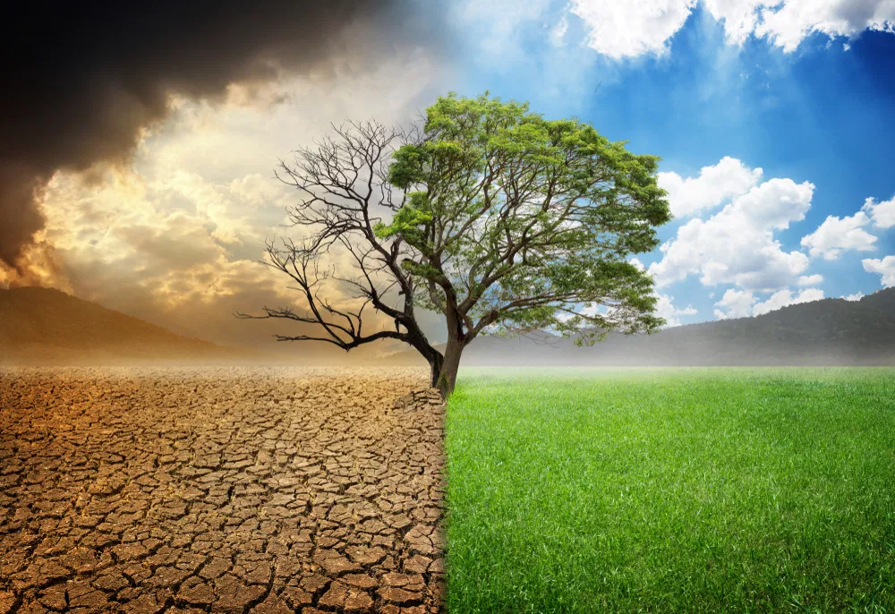
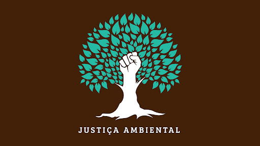
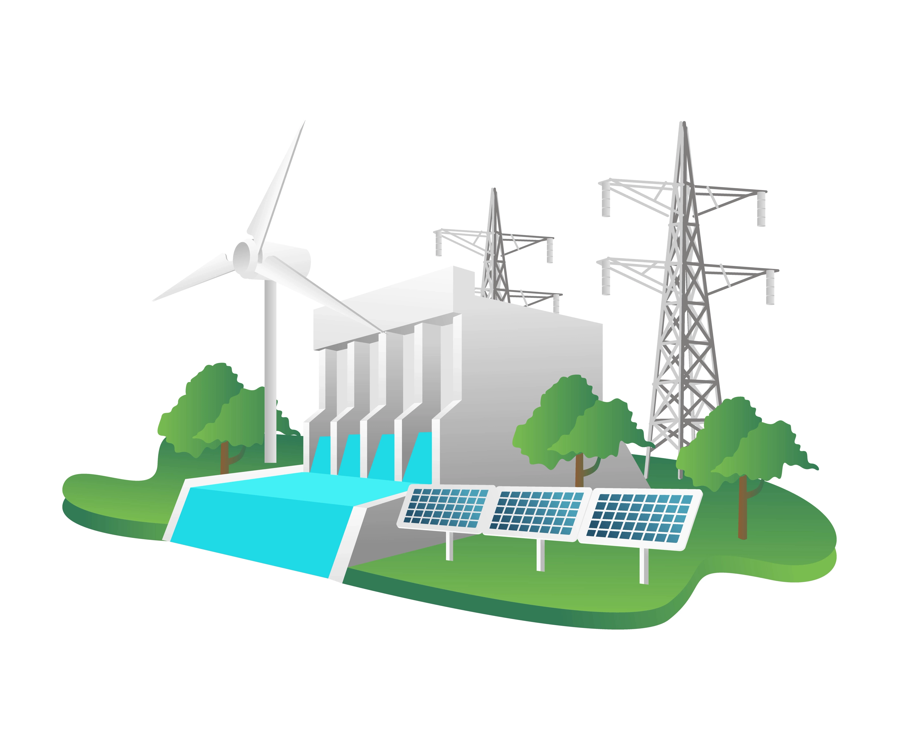
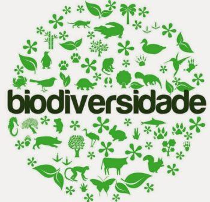
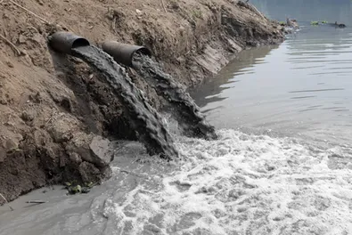
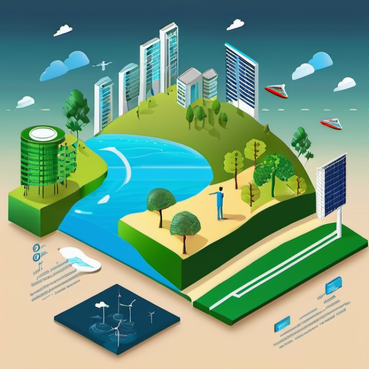

Início
Sobre
Contato
Mais
Jesus te ama
Sustentabilidade e Meio Ambiente

Mudanças Climáticas

Soluções Baseadas na Natureza
Previous
Next

Energia Renovável
O uso de fontes de energia renováveis, como solar, eólica, geotérmica e hidrelétrica, é crucial para reduzir a dependência de combustíveis fósseis. Essas fontes de energia são sustentáveis, inesgotáveis e têm impacto ambiental muito menor em comparação com combustíveis fósseis, ajudando a combater o aquecimento global e a poluição.
Agricultura Sustentável e Segurança Alimentar
A agricultura sustentável visa garantir a produção de alimentos sem esgotar os recursos naturais ou causar danos ambientais. Isso inclui práticas como a rotação de culturas, uso eficiente da água e redução de pesticidas. A segurança alimentar é outro aspecto importante, garantindo que a produção agrícola possa alimentar uma população crescente sem comprometer o meio ambiente.
Economia Circular
A economia circular é um modelo de produção e consumo que visa a redução, reutilização, reciclagem e regeneração de materiais e produtos. Ao contrário do modelo linear (produzir, usar, descartar), a economia circular propõe um ciclo fechado, minimizando o desperdício e o uso de recursos naturais, promovendo uma economia mais sustentável e eficiente.

Conservação da Biodiversidade
A conservação da biodiversidade envolve proteger e restaurar habitats naturais e espécies ameaçadas. A perda de biodiversidade afeta negativamente os ecossistemas, serviços ecossistêmicos e, por consequência, a saúde humana e a economia. A preservação de espécies e ecossistemas é fundamental para manter o equilíbrio ambiental e garantir os recursos naturais para as futuras gerações.

Poluição dos Oceanos e Gestão de Recursos Hídricos
A poluição dos oceanos, causada por plásticos, produtos químicos e outros resíduos, tem impactos devastadores sobre a vida marinha e os ecossistemas costeiros. A gestão sustentável de recursos hídricos envolve o uso eficiente da água, a proteção de rios, lagos e aquíferos, além de iniciativas para reduzir a poluição e preservar a qualidade da água.

Sustentabilidade Urbana e Cidades Inteligentes
Cidades sustentáveis buscam reduzir o impacto ambiental através de práticas como a mobilidade sustentável (bicicletas, transporte público eficiente), edifícios ecológicos, gerenciamento de resíduos e planejamento urbano inteligente. Cidades inteligentes utilizam tecnologia para melhorar a eficiência energética, reduzir a poluição e melhorar a qualidade de vida dos cidadãos, promovendo um crescimento urbano mais equilibrado e sustentável.